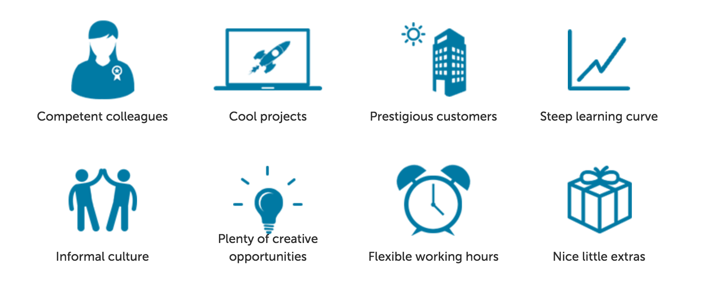

Felix Frank
CfgMgmtCamp.eu Gent 2017
Felix - trying to automate all the things since 2004
In my younger days, I'd play with my computers, read a lot, and write a little code.
IMAGE: little Felix with a computer and some booksAnother thing I enjoyed:
IMAGE: LegoA more compact hobby
IMAGE: my notebookFOSS: be creative, enrich your life/career, and others
also, productively exercise your privilege
Puppet and its Ruby code base are not unlike LEGO
Puppet is successful because of its powerful core and rich extension points
There is a number of ways to extend Puppet.
Let's talk about each in turn.
IMAGE: bored Simpsons?Except that would be super boring
Let's answer a few questions instead: How can you allow Puppet to...
It should work kind of like this
class { "zooraxis":
port => 9791,
user => "www-data",
queues => 27,
}
The common Puppet module
Add helpful classes and defines for common use.
Basically a library for Puppet DSL code
Arguably not an actual Puppet extension.
IMAGE? a snobRegardless, these are the backbone of the module ecosystem and integral part of Puppet's success.
By the way
The majority of the
~100 modules maintained by Vox Pupuli
are this kind of module.
Modules are also the way to ship any kind of extension to the user.
How to use map/reduce or other complex algorithms with Puppet?
A powerful way to run arbitrary Ruby code from the catalog builder.
...
Before we close:
We are hiring in Berlin!